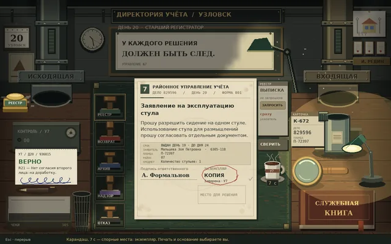
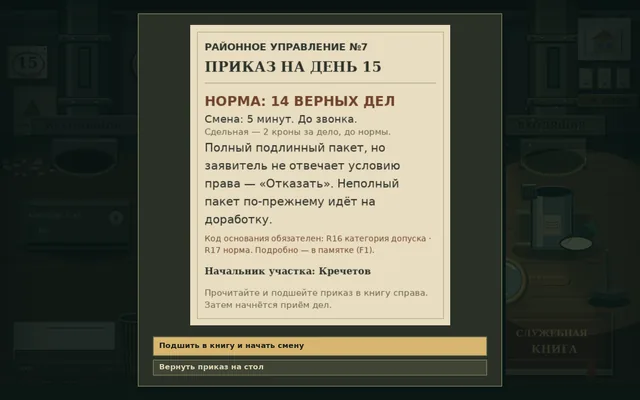
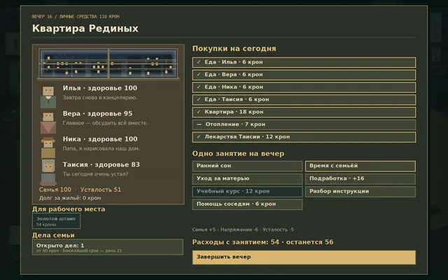

Об игре
Вы — Илья Редин, младший регистратор районного управления учёта № 7 в Узловске. Бумаги прилетают по пневмопочте, на стенде ждут пять печатей, а настенные часы отсчитывают смену. Сверьте номер дела, подпись и отметку копии с приказом дня, поставьте печать, закройте тубус и отправьте его в трубу. Потом распишитесь на чеке настоящим росчерком мыши.
Большинство бумаг — чистый канцелярский абсурд: заявление на эксплуатацию стула, разрешение на содержание голубя, уведомление о получении уведомления. С 24 сюжетными делами всё серьёзнее: они решают, где людям жить и работать, а ваши решения возвращаются через несколько дней — иногда прямо к вашему порогу.
Вечером дома ждут жена, дочь и мать. Скромную зарплату нужно растянуть на еду, квартиру, отопление и лекарства. Тридцать рабочих дней закончатся одним из десяти исходов, а эпилог расскажет о судьбе семьи и тех, чьи дела прошли через ваш стол.
Играть можно бесплатно прямо в браузере, на русском или английском. Игра ещё в разработке, но уже проходится от первого дня до тридцатого.
Особенности
- Рабочее место, где всё делается руками: пневмотрубы, тубусы, лупа, служебная книга и пять печатей
- Подписи, которые вы выводите мышью сами
- 24 правила, которые открываются по ходу месяца
- 24 сюжетных дела с отложенными последствиями, 10 концовок и эпилог
- Домашний бюджет: еда, квартира, отопление, лекарства и угроза выселения
- Карьера: восемь аттестаций и пять должностей
- Играется одной мышью, сохраняется сама, работает в браузере без установки
Скриншоты





